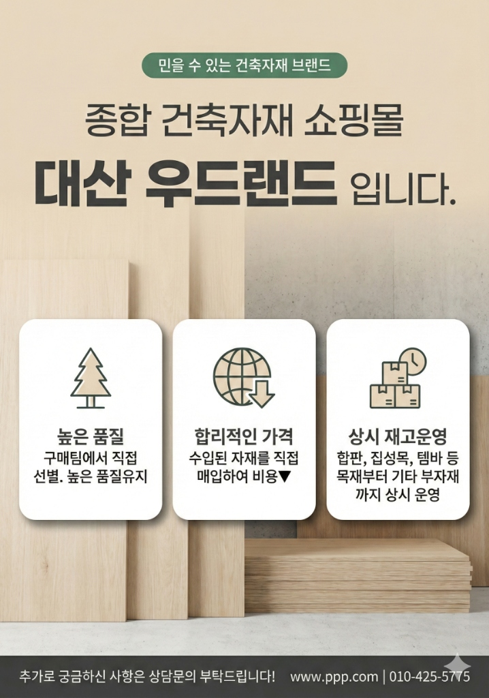
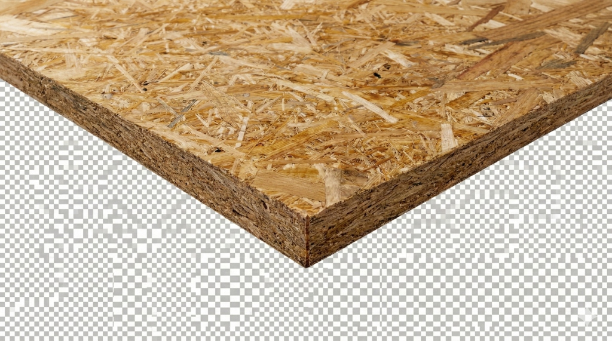

빈티지한 감성과 단단한 내구성의 조화
대산우드랜드 OSB 합판
카페 인테리어부터 튼튼한 구조재까지.
나뭇조각의 불규칙한 배열이 만드는 유니크한 텍스처를 만나보세요.

POINT 01
꽉 채운 밀도, 변함없는 강도
직사각형 모양의 얇은 나무 조각을 방수성 수지와 함께 강하게 압축했습니다.
일반 목재보다 뒤틀림이 적고 강도가 뛰어나 인테리어 및 건축 내외장재로 탁월합니다.
POINT 02
유니크한 인테리어 오브제
별도의 마감 없이 그 자체만으로도 훌륭한 인테리어 포인트가 됩니다.
네추럴한 우드 톤이 공간에 따뜻하면서도 세련된 무드를 더해줍니다.
PRODUCT INFO

구매 전 확인사항
- 옹이/갈라짐 원목 특유의 옹이나 미세한 갈라짐이 있을 수 있습니다.
- 색상 차이 생산 시기에 따라 색상의 차이가 발생할 수 있습니다.
- 치수 오차 재단 및 가공 과정에서 ±1~2mm 오차가 발생할 수 있습니다.